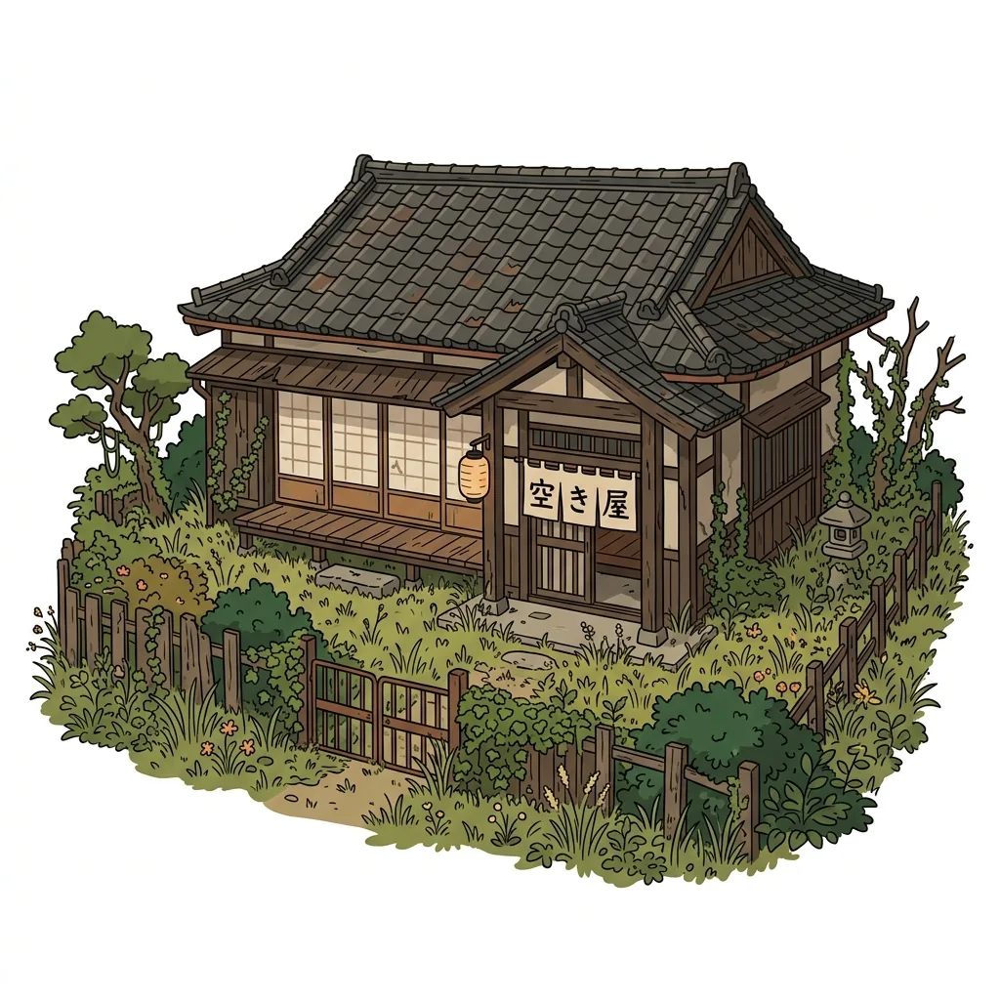
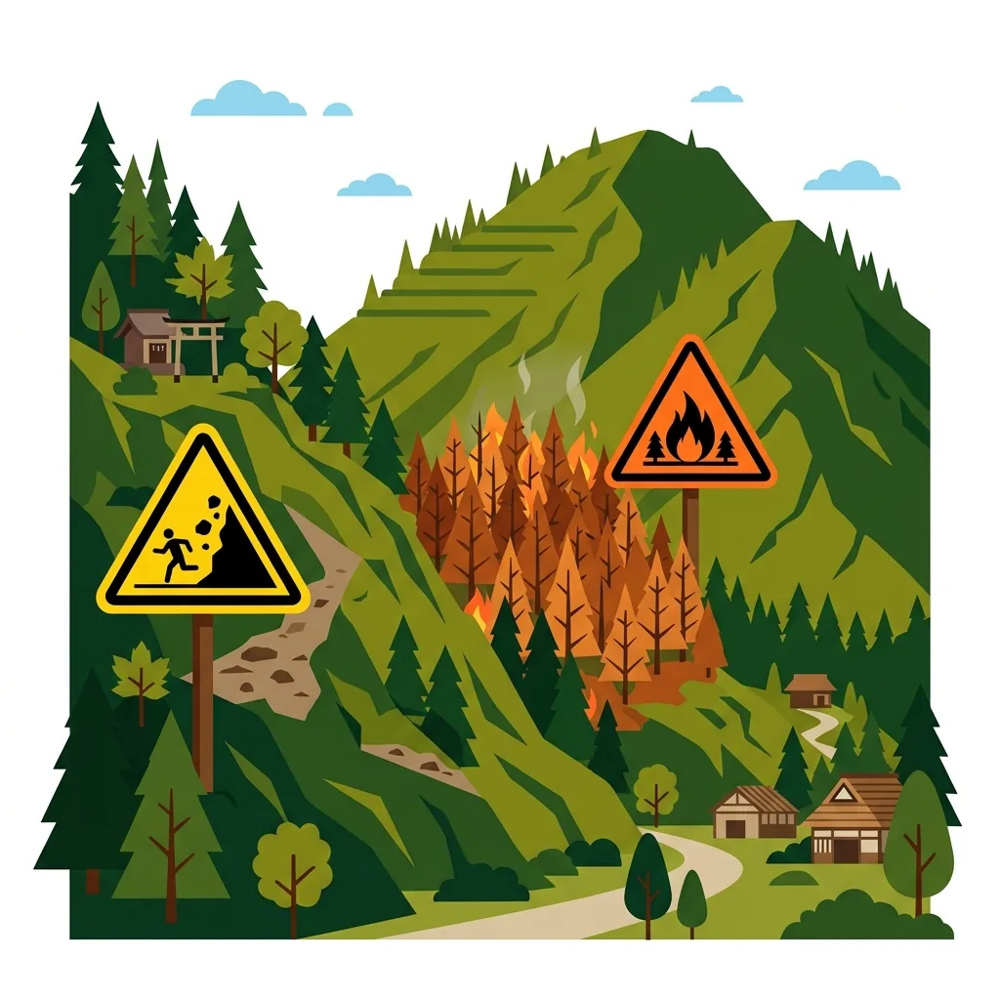
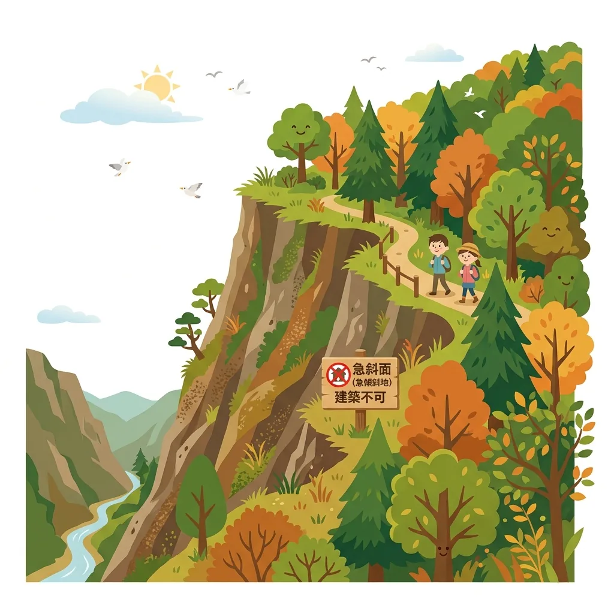
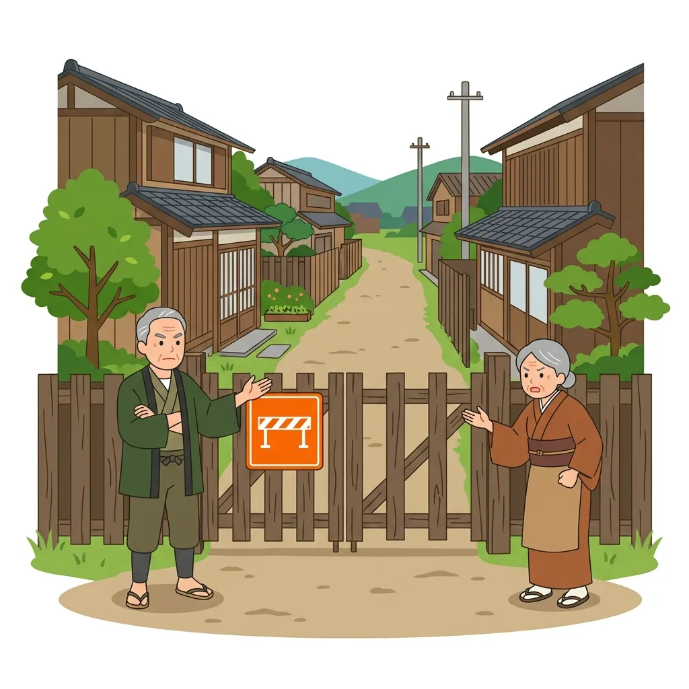

大阪府全域に特化
能勢・豊能・千早赤阪・南河内大阪府の相続不動産に特化
能勢・豊能・千早赤阪・ニュータウン対応
子どもに大阪の
「負動産」を
残したくない
あなたの代で安心して手放しませんか？
ニュータウン空き家・山林・固定資産税から解放
LINEで引き取り可否を無料診断 写真・住所を送るだけ｜概算費用も無料でご案内ニュータウン・空き家・
山林・原野に対応
司法書士・土地家屋調査士と
ワンストップ対応
連棟長屋・
荷物残ったままでもOK
30秒でわかる要約
大阪府（能勢・豊能・千早赤阪・南河内・旧ニュータウン）の処分困難物件手放し 3大ポイント
- 1. 大阪府全域の「売れない負動産」に対応：能勢・豊能の山林原野、千早赤阪村の農地近接土地、泉州・南河内の旧ニュータウン空き家・連棟長屋まで現状のまま引き取り可能です。
- 2. 完全非対面・郵送完結の手続き体制：現地立ち会い不要。提携宅建業者（株式会社ミュートス）と専属司法書士が連携し所有権移転登記を代理実行します。
- 3. 国交省ガイドライン準拠の3つの安心：確定見積もり後の追加請求ゼロ・登記完了後の完全後払い・引き渡し後の将来管理責任の免責を完備。

相続した実家や土地、
どうしたら良いの？
処分困難な「負動産」を抱える多くの方が、同じ葛藤を持っています。

どこに相談しても
「売れない」と断られた
仲介も買取も断られ、どこに相談していいか分からない。

毎年、固定資産税や維持費だけを
払い続けている
放置されたまま、維持コストだけが毎年引き落とされ続けている。

家具や荷物が残ったままで
片付ける費用も時間もない
古い家具やゴミが大量に残っており,遠方のため片付けられない。

相続登記の未了や境界の曖昧さで
トラブルにならないか不安
名義が昔のままだったり境界が分からず、揉め事にならないか心配。
＼ 最近このようなご相談が急増しています ／
空き家・建物のトラブル例
-
解体・雨漏り
崩壊の危険・雨漏りが酷いのに解体費用がない
老朽化が進んで危険なのに、数百万円かかる解体費用が払えず放置するしかない状態。
-
通行権・隣人
囲繞地通行権や私道の通行トラブルで揉めている
今まで無償だった隣地や私道の通行に関し、突然通行料を請求されたり話し合いが拗れた状態。
-
家財・ゴミ
相続した実家がゴミ屋敷状態で手がつけられない
何十年分もの家財道具や不用品、ゴミが山積みで、片付け費用も時間もない状態。
-
訳あり・事故
事故物件や、改装しても売れないリスクを負いたくない
事故物件であるため売りに出せない、またはリフォーム費用をかけても売れ残って赤字が広がるリスク。
山林・土地のトラブル例
-
二次災害・山火事
大雨による土砂崩れや山火事の賠償責任が怖い
近年の異常気象による土砂崩れや乾燥による山火事など、万が一の二次災害による所有者責任の懸念。
-
所在不明
地番はわかるが、場所が全くわからず管理できない
祖父やそれ以前の代から所有しているが、住宅地図やゼンリンにも載っておらず、現地にも行けない状態。
-
飛地・未接道
道がなく他人の土地に囲まれた「飛地（無接道）」
道路に接しておらず、周囲を他人の土地に囲まれていて立ち入りすら困難な状態。
-
法的制限・保安林
枝一本切るのにも許可が必要な「保安林」の指定
国の指定（保安林）になっているため、草刈りや伐採などの自由な処分や維持管理が極めて難しい状態。
-
リゾート・通行料
バブル期の放置別荘地で、通行・整備費を請求された
開発業者が私道を放置したためダメージが酷く、最近になって道路整備費や高額な通行料を請求された状態。
ABOUT US / 私たちの想い
不動産会社に「売れない」と断られた物件も、
不動産会社に「売れない」と断られた物件も、
法的な安心と共にお引き受けします
私たちは、一般の仲介や売買では取引されない、いわゆる「負動産（山林、原野、古民家など）」の有料処分に特化した専門家チーム窓口です。
「親が残してくれた実家や土地を有料で処分することに、心理的な抵抗感や罪悪感を感じる」という方も少なくありません。しかし、手入れの途絶えた山林や空き家を放置することは、将来的に土砂崩れや倒壊など、地域社会への災害リスクや近隣クレームに繋がってしまいます。私たちの有料引き取りサービスは、単なる「処分」ではなく、地域の安全管理や林業保全、建物再生を行う信頼できる次の専門事業者へバトンを繋ぐ「未来のためのポジティブな再循環（リサイクル）」です。あなたの代で綺麗に整理し、次の世代や社会資源へと繋ぐための安心の選択肢をご提案します。
「処分できずに子どもに負担を残したくない」「管理責任の不安から解放されたい」というお客様の切実な声に向き合い、提携する司法書士・土地家屋調査士と一丸となって、郵送だけで完了する安全な所有権移転の仕組みを構築しました。
司法書士・土地家屋調査士 専属連携チーム
| 対応内容 | 相続登記未了案件の段取り、所有権の法的な移転登記手続き、実測・境界の法的調整 |
|---|---|
| 対応エリア | 京都府・大阪府・滋賀県・兵庫県・和歌山県（関西全域） |

宅建業者・司法書士と連携
専門家3社が連携して 契約・登記・引き取りまで ワンストップ対応

受付・案内


調査・契約


不動産の悩みを解決し、
安心をお届けします
- 不要な不動産を手放せる
- 固定資産税などの負担から解放される
- 専門家のサポートで手続きも安心

コンプライアンス遵守で
安心してお任せいただけます
実績多数の専属連携
透明性ある費用提示
事前見積り確定で安心
＼ 大阪府全域（能勢・豊能・千早赤阪・南河内・旧ニュータウン）対応 ／
写真を送るだけ！まずはLINEで無料引き取り診断
現地立ち会い不要・概算のお引き取り費用も無料でご案内します
LINEで引き取り可否を無料診断 確定後の追加費用ゼロ・完全後払い制で安心
USE CASES / 想定ユースケース
このような「負動産」のお引き取りを想定しています
「売れない」「手放したい」様々なご状況に合わせた、具体的な想定ユースケースです。

CASE 01
遠方で管理不能・雨漏りの
遠方で管理不能・雨漏りの
「空き家・古民家」
放置されて草木が伸び放題の実家や、雨漏り・崩壊リスクがあるものの解体費用がない物件もお引き取りします。
CASE 02
相続したものの手がつけられない
相続したものの手がつけられない
「ゴミ屋敷・不用品残り」
片付けやゴミ処分は一切不要。長年の家財道具やゴミが大量に残った「現状有姿」のまま手続きが可能です。
CASE 03
地番しかわからず場所すら不明な
地番しかわからず場所すら不明な
「山林・原野」
祖父の代からの土地で「場所が全くわからない」「ゼンリン地図等にも出ない」といった山林も現地確認不要で引き取ります。

CASE 04
土砂崩れ・山火事リスクや
土砂崩れ・山火事リスクや
「厳しい保安林」
大雨での土砂崩れや山火事などの災害賠償リスク、枝一本切るのにも許可が必要な「保安林」の維持負担から解放されます。

CASE 05
再建築不可の狭小地や
再建築不可の狭小地や
接道のない「飛地（無接道）」
道路に接しておらず建て替えができない土地や、周囲を囲まれて入れない飛地・崖地なども登記手続きから対応します。

CASE 06
通行料請求等の
通行料請求等の
「隣人トラブル・赤字リスク」
「囲繞地通行権」や「私道通行料」を巡って揉めている物件や、リフォームしても売れないマイナスリスクを解消します。
「負動産リサイクルセンター 大阪窓口」が選ばれる理由
専属の専門ネットワークがあるからこそできる、安心の処分・引き取り体制


なぜ「有料引き取り」なのか？
確定したお見積り費用を一括でお支払いいただき、管理責任と将来の固定資産税・維持費を引き受けます。

＼ 相続前の事前査定や共有持分も相談可能 ／
「うちの物件も引き取れる？」をLINEで即時診断
スマホから物件の所在地や写真を送るだけ。24時間受付中
LINEで引き取り可否を無料診断 しつこい営業電話や対面面談は一切ありません引き取り後の「リサイクル」スキーム
専門パートナーへの確実なバトン引き継ぎによる価値の再循環

一目でわかる「他社・通常の仲介」との違い
当センターの負動産引き取りが選ばれる理由

なぜ不動産会社は引き取ってくれないのか？
法改正で仲介上限「33万円」になっても、
法改正で仲介上限「33万円」になっても、
売れない物件は敬遠されます
2024年の宅地建物取引業法の改正により、400万円以下の低廉な空き家等の売買における媒介報酬（仲介手数料）の上限が最大33万円まで受領可能になりました。
しかし、現実には以下の理由から、既存の不動産会社は積極的な仲介を行っていません。
- 買い手がそもそもいない：大阪府内でも山間部やアクセスの悪いオールドニュータウン、古い空き家は、買い手を募っても反響がゼロです。
- 仲介手数料33万円でも割に合わない：調査費用や境界の確認、案内作業など、契約までの手間と交通費を考えると不動産会社にとっては大赤字になります。
当社の提案： 「誰かに売る（仲介）」ことを待つのではなく、「当社がお金（引き取り費用）をいただいて直接買い取る（引き取る）」ことで、買い手を探す時間をゼロにし、即座に登記を移転します。
01
費用・条件を明示
事前にすべてをご説明します
 費用の内訳を明確に提示
費用の内訳を明確に提示- 追加費用の発生条件を事前説明
- 契約書に費用・条件を明記
02
登記確認後にお支払い
所有権移転後の安全な決済
- 所有権移転登記の完了を確認
- 登記完了後にお支払い実行
- 司法書士が手続きをサポート
03
引き渡し後の責任完全免責
将来のリスクから完全に解放します
- 引き渡し後の責任を完全に免責
- 将来のトラブル・費用に一切関与しません
- 建物・土地の欠陥や管理責任も免責
国土交通省の確認事項に準拠
安心・安全な取引のためのポイント
国土交通省が示す有料引き取り利用時の確認事項に基づき、以下の項目を徹底しています。
＼ 放置された不動産の管理負担を解消 ／
国交省ガイドライン準拠の安心引き取りをご案内
完全後払い＆登記完了までの徹底サポートで安全にお手続きできます
LINEで引き取り可否を無料診断 写真・住所を送るだけ｜無料で概算費用をご提示近隣府県の専用窓口・対応エリア
大阪府以外の関西全域（京都・滋賀・兵庫・和歌山）の専門窓口でも引き取り査定を受付中
京都エリア窓口
【対応地域：京都北部（綾部・福知山・南丹・京丹波）】
地元のローカルネットワークと連携し、空き家、古民家、長屋、アパートなどの早期引き取り査定を行っています。
滋賀エリア窓口
【対応地域：湖西・北部（大津・高島・長浜）】
大津市湖西や高島・長浜などの豪雪地帯に放置された空き家・古民家を有料引き取りする地域専用窓口です。
兵庫エリア窓口
【対応地域：淡路島・山間部（但馬・丹波・西播磨）】
淡路島の放置空き家や但馬の豪雪地の建物、丹波や西播磨の古民家などを有料引き取りする地域専用窓口です。
和歌山エリア窓口
【対応地域：有田川・紀美野・紀南山間部・高野山】
山間部や沿岸部に放置されたままの空き家や古民家、使用されなくなった店舗などを受付・有料引き取りする地域専用窓口です。
完全非対面・郵送のみの3つのステップ
＼ 来店も対面も不要。ご自宅にいながらスピーディに手放せます ／
STEP
01
01
スマホで
情報入力
- 完全無料
- 住所・納税通知書を
スマホで撮るだけ
費用も手間もかからないから、まずは十分お気軽にご相談ください。
STEP
02
02
書類が届いたら
署名・返送
- 対面不要・郵送のみで完結
- お見積り金額に納得してから契約
内容をしっかり確認してからご判断いただけます。勝手に契約が進むことは一切ありません。
STEP
03
03
引き取り完了！
- 最短14日でお引き取り完了
- 登記完了に関する書類をご自宅へ送付
- 固定資産税・管理責任が完全消滅
手放した証明が届くから安心。税金や管理の不安からも解放されます。
よくある質問
大阪府・能勢・豊能・千早赤阪・南河内エリアのお客様から寄せられるご質問にお答えします
【対象物件・引き取り条件】
Q
本当にどんな物件でも引き取ってもらえますか？
A
はい、原則としてどのような物件でもお引き受け可能です。 能勢町・豊能町・千早赤阪村・南河内・泉州をはじめ他社で断られた崖地、再建築不可の狭小地、道路に面していない土地、境界が不明な山林、相続登記が未完了の古い空き家でも問題ありません。提携宅建業者（株式会社ミュートス）および専属の司法書士チームが法的な調査から手続き整理まで一括サポートいたします。
Q
家の中に家具や荷物（残置物）が大量に残っていますが、そのままでも大丈夫ですか？
A
はい、生活用品や家具が残った状態（現状のまま）でもお引き受け可能です。 事前にお客様側で搬出や片付け、清掃をしていただく必要はありません。大量の不用品処分や家財の整理手配も含めて、提携事業者とともにトータルでサポートいたします。
Q
「地目が墓地の土地」や先祖のお墓がある土地、境界不明な山林も引き取れますか？
A
はい、地目が墓地の土地や境界が未確定な山林・崖地・土砂災害警戒区域など、一般的な不動産店で拒否される物件でもお引き受け可能です。 改葬手続きや地目変更登記、境界確認の手配などの法的手続きも、提携司法書士・土地家屋調査士チームが連携して対応いたします。
【他サービス・制度との違い】
Q
「相続土地国庫帰属制度」や「自治体への寄付」と何が違うのですか？
A
国庫帰属は建物がある土地や境界が曖昧な土地は申請できません。当センターでは国庫帰属対象外の物件も柔軟に対応可能です。 国庫帰属制度は条件が厳しく申請却下リスクや高い審査負担金が必要となります。また自治体への寄付も受け入れ条件が限定的です。当センターでは民間の受託網を活用し、建物付き土地や境界未確定山林もスムーズに引き取ります。
Q
空き家バンクや地元の不動産会社で売れなかった物件でも相談できますか？
A
はい、空き家バンクや一般仲介で何年も買い手がつかなかった物件のご相談を多数いただいております。 買主を探す仲介ではなく「当センター（提携宅建業者）が直接買い取り・引き取る」形となるため、長期間放置された物件でも確実な手放しが可能です。
【権利関係・相続・法律リスク】
Q
相続登記がまだ終わっていませんが、そのまま相談できますか？
A
はい、相続登記が完了していない現状のままでご相談いただけます。 提携司法書士が相続人様の調査・整理から遺産分割協議書の作成、相続登記の申請まで一括してサポートいたしますので、未登記のまま放置されている物件でも安心してお任せください。
Q
現在、家庭裁判所で相続調停中（または遺産分割協議中）ですが、事前査定や引き取り可否の相談はできますか？
A
はい、相続調停中や遺産分割協議の段階でも、事前のご相談や引き取り可否の確認、お見積りのご提示が可能です。 遺産分割の話し合いを行うにあたり、「引き取りにどの程度の費用がかかるか」「所有権移転が可能か」を事前把握しておくことで、相続人間での話し合いの客観的な参考材料としてご活用いただけます。（※本査定は特定の相続人の利益を代弁あるいは交渉に介入するものではなく、対象物件に基づく客観的な試算です。また、引き取り査定回答および実際の契約主体は提携する宅地建物取引業者となります。所有権移転手続きは調停成立等により取得者が確定した後に提携司法書士とともに進められます。）
Q
兄弟や親族との「共有持分」だけを処分することはできますか？
A
はい、ご自身が所有する「共有持分のみ」の引き取り・所有権移転手続きが可能です。 他の共有者との話し合いが難航している場合や連絡が取れない状況であっても、お客様の持分単独でご相談・手放しを進めることができます。
Q
相続放棄をすれば、売れない空き家の管理責任はすぐになくなりますか？
A
いいえ、相続放棄をしても次の管理者が決まるまでは管理責任が残る場合があります。 民法改正により保存義務が整理されましたが、放置すると近隣トラブルや賠償責任のリスクが残ります。有料引き取りを活用して所有権移転登記を完了させることで、将来の管理リスクから確実に解放されます。
【費用・税金・手続きの流れ】
Q
有料引き取りにかかる費用はどのくらいかかりますか？
A
物件の所在地、面積、固定資産税額、将来の維持管理コスト、登記費用などを勘案して「一回限りの確定お見積り（処分費用）」をご提示します。 ご契約時にお提示した確定お見積り額以上の追加費用が発生することは一切ありません。無料査定にて物件情報をお知らせいただければ、事前に概算費用をご案内いたします。
Q
引き取り後の管理責任や固定資産税はどうなりますか？
A
提携司法書士が法務局への所有権移転登記を完了した時点で、お客様の法的な管理責任および固定資産税の納税義務は完全に消滅します。 登記完了後は、名義が完全に移転したことを証明する「登記事項証明書（登記簿謄本）」の写しなどの登記完了書面を郵送にてお渡しいたします。
Q
放置した空き家の「固定資産税6倍化」リスクが心配ですが、どう対策すべきですか？
A
放置空き家が「特定空家」や「管理不全空家」に指定されて自治体から勧告を受けると、住宅用地特例（固定資産税の最大1/6軽減）が解除され、税負担が実質約6倍となる可能性があります。 課税が強化される前に当センターで所有権移転を完了させることで、突然の増税リスクや過料等の不安を解消できます。
Q
契約手続きのために来店したり、対面での面談は必要ですか？
A
いいえ、完全に「対面不要・郵送完結」で手続きが完了します。 LINEやWEBでの査定完了後、契約書や登記委任用の必要書類をご自宅へ郵送いたします。必要事項にご記入・ご捺印（実印）の上、返送していただくだけですので、遠方にお住まいの方やご多忙な方でも問題なく進められます。
大阪府の負動産問題、
私たちにお任せください。
「もう手放したい」「次の世代にこの悩みを残したくない」とお考えなら、今すぐ第一歩を踏み出しましょう。 私たちは地元での信頼と誠実な対応をお約束いたします。
相続・境界のややこしい相談も無料！

LINEで引き取り可否を無料診断
スマホで物件の写真や納税通知書の写真を送るだけ！24時間いつでも簡単に査定依頼が可能です。専門家チームへの相談もLINEからワンタップで行えます。
スマホでスキャンして友だち追加
【安心の3つの約束】お見積り確定後の追加費用ゼロ / 登記完了後の完全後払い制 / 国土交通省ガイドライン準拠
＼処分困難な実家や山林を有料引き取り／ 最短1〜2週間で管理責任から永久解放！
LINEで引き取り可否を無料診断
写真・住所を送るだけ｜概算費用も無料でご案内